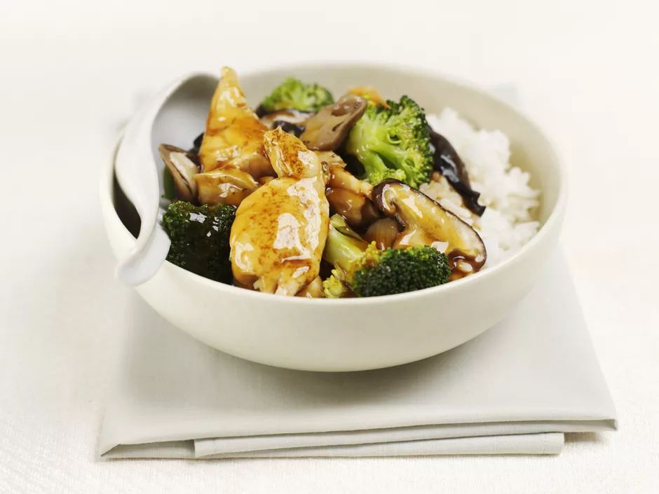

Chinees Dishes

Easy Oyster Sauce Chicken
Ingredients
- 4 large bone-in chicken thighs
- 1/4 teaspoon salt
- 1/4 teaspoon freshly ground black pepper
- 1/2 medium yellow onion
- 2 clove garlic
- 2 small red bell peppers
- 1/2 cup chicken broth
- 2 tablespoons oyster sauce
- 1 tablespoon soy sauce , or tamari
- 1 tablespoon rice wine, or dry white wine
- 1 teaspoon brown sugar
- 2 teaspoons vegetable or olive oil
- 4 cups cooked rice, for serving
Steps to Make It
Gather the ingredients.
- Pat the chicken thighs dry. Cut each thigh in half crosswise, cutting completely through the bones. Rub the salt and pepper over the thighs.
- Peel and chop the onion. Peel and finely chop the garlic. Cut the red bell peppers in half, remove the seeds, and cut into 1-inch squares.
- In a small bowl, combine the chicken broth, oyster sauce, soy sauce, rice wine, and brown sugar. Mix until the sugar is dissolved and set the sauce aside.
- In a non-stick frying pan, heat the oil over medium heat. Add the chicken thighs and brown on both sides. Remove the chicken thighs from the pan and drain on paper towels. Do not clean out the pan.
- Add the onion and garlic into the pan, and cook until the onion is softened, about 5 minutes. Add the red pepper into the pan. Cook briefly, then add the sauce.
- Bring the sauce to a boil, then add the chicken thighs back into the pan. Reduce the heat, cover, and simmer the chicken until the juices in the thickest part of the thigh are clear when pierced with a fork (about 15 minutes). Stir the chicken occasionally while cooking.
- Serve hot over rice and enjoy!